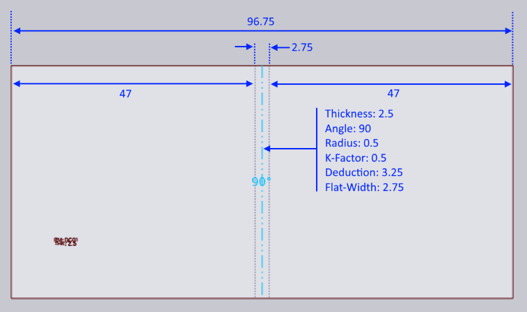

ฟีเจอร์ปรับเปลี่ยนรูปทรงเรขาคณิต
เอกสารนี้อธิบายตัวเลือกกระบวนการที่แตกต่างกัน 3 แบบที่มีให้ใช้งานกับ ฟีเจอร์ปรับเปลี่ยนรูปทรงเรขาคณิต:

ฟังก์ชันปรับเปลี่ยนรูปทรงเรขาคณิตจะถูกเรียกใช้เมื่อชิ้นงานที่ป้อนเข้ามาไม่ตรงกับสภาวะกระบวนการจริง อาจมีปัญหาอย่างใดอย่างหนึ่งหรือทั้งสองอย่างต่อไปนี้กับชิ้นงาน:
-
รัศมีภายในของการพับอาจเล็กเกินไป แต่ละกระบวนการ (เช่น การพับแบบแผง หรือ การพับแบบแอร์เบรคด้วยเครื่องพรีสเบรค) จะมีรัศมีภายในขั้นต่ำที่เป็นไปได้สำหรับ กระบวนการนั้น หากรัศมีการออกแบบของชิ้นงานเล็กกว่านี้ ชิ้นงานจะไม่สามารถ ผลิตได้ตามที่ออกแบบไว้ จำเป็นต้องเปลี่ยนรัศมี
-
K-factor ของเส้นพับอาจไม่ถูกต้อง เครื่องจักรกระบวนการ (เครื่องพับแผงเทียบกับ พรีสเบรค) และเครื่องมือหรือเงื่อนไขของกระบวนการ (พั้นช์/ไดย์/ใบพับ/ช่องว่างอากาศ) ทั้งหมด รวมกันเพื่อกำหนด K-factor จริงของการพับ การพับอาจถูกออกแบบ ด้วย K-factor ที่แตกต่างกัน.[1]
ลองมาดูชิ้นงาน 2-D แบบง่าย ๆ ที่มีทั้งรัศมีที่ไม่ถูกต้องและ K-factor ที่ไม่ถูกต้อง และดูว่าฟังก์ชันปรับเปลี่ยนรูปทรงเรขาคณิตปรับเปลี่ยนชิ้นงานนี้อย่างไร

แสดงชิ้นงาน 2D ที่ป้อนเข้ามาด้านบน - เป็นสี่เหลี่ยมผืนผ้าแบบง่าย ๆ ที่มีเส้นพับหนึ่งเส้นอยู่ ตรงกลางพอดี ความกว้างของชิ้นงานคือ 96.75 มม. ความหนาของวัสดุคือ 2.5 มม.
เส้นพับได้รับการ ออกแบบ ด้วยรัศมีภายใน 0.5 และ K-factor 0.5 ความกว้างแบน (ความยาวของเส้นกลาง) จึงเป็น:
มุม * (รัศมีภายใน + kFactor * ความหนา) = PI/2 * (0.5 + 0.5 * 2.5) = 2.75 มม.
เนื่องจากนี่เป็นการพับ 90 องศา การหักลดค่าการพับจึงเป็นเพียง:
2 * ความหนา - ความกว้างแบน = 2 * 3 - 2.75 = 3.25 มม.
ไม่เปลี่ยนแปลงอะไรเลย
เมื่อพับขึ้น โดยไม่มีการประมวลผลปรับเปลี่ยนรูปทรงเรขาคณิตใด ๆ สิ่งนี้จึงสร้างชิ้นงานที่มี ขนาดเหล่านี้:

นี่ก็เป็นผลลัพธ์ที่เราได้รับด้วยตัวเลือก ไม่เปลี่ยนแปลงอะไรเลย เช่นกัน ทั้ง K-factor และรัศมีไม่ถูกเปลี่ยนแปลง ส่งผลให้ได้ชิ้นงาน 3D ที่ตรง กับเจตนาการออกแบบของภาพวาด 2D อย่างแม่นยำ หากตั้งค่านี้สำหรับการผลิต ชิ้นงานที่ผลิตขึ้นจริงจะไม่ตรงกับขนาดเหล่านี้จริง ส่วนใหญ่เป็นเพราะ การพับที่ผลิตบนเครื่องจักรจะแตกต่างกันทั้งในรัศมีและ K-factor ที่มีผลกว่าการพับ ที่ได้รับการออกแบบไว้ ในกรณีนี้ คุณจะได้ชิ้นงานที่เล็กกว่า 50x50 เล็กน้อยหลังจากการผลิต
รักษาขนาดแบน
หากเลือกตัวเลือกนี้ TecZone จะรักษาขนาดของแบนไว้ไม่เปลี่ยนแปลง แต่จะใส่หมายเหตุ เส้นพับด้วยรัศมีการพับและ K-factor ที่ถูกต้อง สมมติว่ารัศมีการพับที่ถูกต้อง คือ 2.5 มม. และ K-Factor คือ 0.46 มม. ชิ้นงานจะถูกเปลี่ยนแปลง ภายในเป็นแบบนี้ก่อน:

สังเกตว่าขนาดโดยรวมของชิ้นงานไม่เปลี่ยนแปลง (ยังคงเป็น 96.75 มม.) และตำแหน่งของเส้น พับไม่เปลี่ยนแปลง อย่างไรก็ตาม การพับตอนนี้มีรัศมี 2.5 และ K-factor 0.46 ซึ่งหมายความ ว่าความกว้างแบนของการพับเพิ่มขึ้นเป็น 5.73 ตอนนี้พับขึ้นเพื่อให้ได้ผลลัพธ์ ดังต่อไปนี้:

อย่างที่คุณเห็น ขนาด 2D ของชิ้นงานไม่เปลี่ยนแปลง แต่ขนาด 3-D ได้ เปลี่ยนเป็น 50.51 x 50.51 (จากขนาดการออกแบบเริ่มต้น 50 x 50)
รักษาขนาด 3-D
หากเลือกตัวเลือกนี้ ขนาด 3D ของชิ้นงานจะไม่เปลี่ยนแปลง แต่เนื่องจากรัศมีการพับ และ K-factor มีการเปลี่ยนแปลง ชิ้นงานที่คลี่แบนจะเปลี่ยนแปลง เมื่อเริ่มต้นด้วยแบน 2-D (เช่นในตัวอย่างนี้) TecZone จะทำตามขั้นตอนต่อไปนี้
-
พับโมเดลเป็น 3D โดยใช้เจตนาการออกแบบเริ่มต้นของรัศมีและ K-Factor ซึ่งจะ ส่งผลให้ได้โมเดล 3D ที่ดูเหมือนกับโมเดลในรูปที่ 2
-
ตอนนี้ เปลี่ยนรัศมีเป็นรัศมีเป้าหมาย 2.5 มม. และ K-factor เป็นเป้าหมาย 0.46 ซึ่งจะส่งผลให้ได้โมเดล 3D เช่นด้านล่าง:

-
จากนั้นโมเดลนี้จะถูกคลี่แบน (โดยใช้ K-factor 0.46 สำหรับการพับ) เพื่อให้ได้ แบนดังต่อไปนี้:

ด้วยตัวเลือกนี้ ขนาด 3D จะถูกรักษาไว้ที่ขนาดการออกแบบ 50x50 ความกว้างของชิ้นงานที่คลี่แบนมีการเปลี่ยนแปลงจาก 96.75 เป็น 95.73 มม.
สรุป
-
หากยังไม่ได้ผลิตแบนแล้ว ตัวเลือกที่ดีที่สุดโดยทั่วไปคือ รักษาขนาด 3-D
-
หากผลิตแบนแล้วและไม่สามารถแก้ไขได้ ตัวเลือกที่ดีที่สุดคือ รักษาขนาดแบน
ตัวเลือกทั้งสองนี้จะส่งผลให้ได้ชิ้นงานที่ผลลัพธ์การผลิตขั้นสุดท้ายควรตรงกับ ข้อมูล 3D ตามที่เห็นในหน้าต่าง TecZone ในทางตรงกันข้าม ตัวเลือก ไม่เปลี่ยนแปลงอะไรเลย จะ ส่งผลให้ได้ชิ้นงานที่ผลิตขั้นสุดท้ายที่จะ ไม่ ตรงกับข้อมูล 3D ที่เห็นใน TecZone เนื่องจาก รัศมีการพับจริงและ K-factor ไม่ได้สร้างแบบจำลองอย่างถูกต้องในการออกแบบ